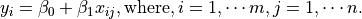
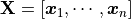
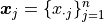
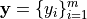
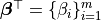
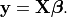

Regression Algorithm¶
Note
A journey of a thousand miles begins with a single step – old Chinese proverb
In statistical modeling, regression analysis focuses on investigating the relationship between a dependent variable and one or more independent variables. Wikipedia Regression analysis
In data mining, Regression is a model to represent the relationship between the value of lable ( or target, it is numerical variable) and on one or more features (or predictors they can be numerical and categorical variables).
Ordinary Least Squares Regression (OLSR)¶
Introduction¶
Given that a data set  which contains n features
(variables) and m samples (data points), in simple linear regression model for modeling
which contains n features
(variables) and m samples (data points), in simple linear regression model for modeling  data points with one independent variable: , the formula is given by:
data points with one independent variable: , the formula is given by:

In matrix notation, the data set is written as  with ,  (see Fig. Feature matrix and label) and . Then the normal equations are written as


Feature matrix and label
How to solve it?¶
Direct Methods (For more information please refer to my Prelim Notes for Numerical Analysis)
For squared or rectangular matrices
- Singular Value Decomposition
- Gram-Schmidt orthogonalization
- QR Decomposition
For squared matrices
- LU Decomposition
- Cholesky Decomposition
- Regular Splittings
Iterative Methods
Stationary cases iterative method
- Jacobi Method
- Gauss-Seidel Method
- Richardson Method
- Successive Over Relaxation (SOR) Method
Dynamic cases iterative method
- Chebyshev iterative Method
- Minimal residuals Method
- Minimal correction iterative method
- Steepest Descent Method
- Conjugate Gradients Method
Linear Regression (LR)¶
TO DO …..